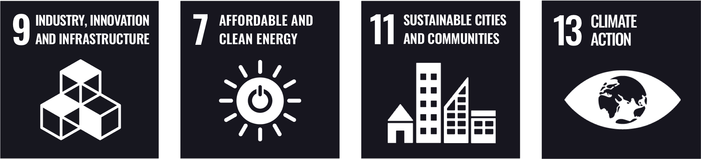
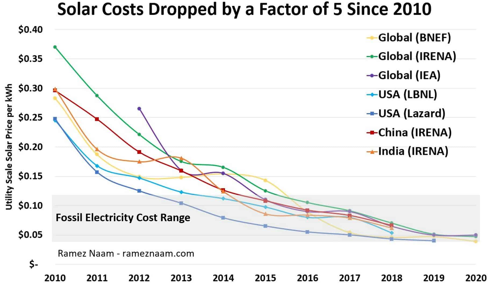

Switzerland’s electricity consumption in the year 2021 amounts to 57 TWh/a, of which roughly 80% can already be attributed to renewable energy sources. However, Switzerland’s electricity consumption is projected to grow to 84 TWh/a until the year 2050 due to various factors such as population growth, electrification of previously fossil-fuel powered industries as well as technological advancements such as the widespread adoption of electric vehicles or artificial intelligence. This increased demand will not be able to be covered by nuclear or hydropower, since Switzerland plans a gradual phase-out of nuclear energy and since the potential of hydropower has largely been exhausted due to conflicting concerns regarding ecology and landscape protection.
That is where solar energy comes into play. Compared to nuclear power, there are no concerns of devastating accidents or radioactive waste management and the impact of the plants on ecosystems and nature is much less significant as opposed to hydropower plants. As of 2021, solar energy currently accounts for just 5% of Switzerland’s annual electricity consumption, which means that Switzerland is (solar-)eclipsed in this regard by neighboring countries such as Germany or Italy.
Even though the installed power of all photovoltaic plants already exceeds the power of Switzerland’s four active nuclear power plants, there is still much room to grow.
Studies show that the combined photovoltaic potential of the roofs and facades of buildings in Switzerland amounts to 85 TWh/a, which means that the predicted electricity consumption for 2050 could theoretically be fully covered by installing photovoltaic plants on all suitable roofs and facades in Switzerland. However, only roughly 4% of this potential is currently exhausted.
Solar energy is the key to a successful transition towards renewable energy, having the potential to address a wide range of the Sustainable Development Goals outlined by the UN. Electricity harvested through the power of the Sun contributes to responsible production patterns in the form of sustainable infrastructure, which can provide affordable and clean energy, contributing to the sustainability of human settlements and thereby also to the mitigation of climate change.
In light of the identified importance of solar energy in the transition towards renewable energies, we seek to investigate the temporal and spatial development of the exhaustion of the photovoltaic potential of Switzerland’s roofs and facades by comparing the power of currently installed photovoltaic plants to the theoretical potential determined for each municipality by the Swiss Federal Office of Energy. Moreover, we also aim to examine possible correlations with socioeconomic factors that might hinder or boost the development of solar energy adoption in Switzerland. Therefore, we aim to investigate the following research questions and hypotheses with the ultimate goal of informing policies to promote greater access to renewable energy.
The map frame consists of four elements: the main map, two plots depicting the development of solar energy potential exhaustion since 2005 and the relationship between the socioeconomic variables and the exhaustion respectively and a control panel, which can be used to alter the information displayed in the two plots.
The radio buttons labeled “Political orientation” and “Home ownership” may be used to switch between the views of the two socioeconomic variables in the bottom right plot. The map shows the exhaustion of photovoltaic potential for every canton of Switzerland. A canton may be selected to reveal the municipalities within the canton including their exhaustion. The municipalities can once again be selected, which adds them to the plots on the right and allows for the comparison of the development of the exhaustion over time as well as of the relationship between the exhaustion and political orientation or homeownership rate between different municipalities. For additional comparisons, the exhaustion of cantons and municipality types over time may be added to the plots via the boxes in the control panel. Selecting a canton or municipality type also causes the municipalities they contain to be highlighted in the plot depicting the relationship between the socioeconomic variables and the exhaustion of the photovoltaic potential. Elements may be removed from the plot through the button labeled “clear selection”.
The fraction of exhaustion of photovoltaic potential for a municipality or canton is determined by computing the sum of the installed power of all plants within the respective municipality and converting the power to an energy output by assuming a factor of 950 kWh per kWp, which according to Baumgartner et al. (2015) corresponds to the standard yield of PV plants in Switzerland. The computed energy output was subsequently divided by the photovoltaic potential determined for each municipality by the Swiss Federal Office of Energy to obtain the fraction of exhausted solar energy potential.
As of the year 2010, Switzerland is experiencing a massive boom in solar energy adoption which manifests itself in a steady but drastic increase in the exhaustion of solar energy potential. The starting point of this boom coincides for all cantons. In 2019, the exhaustion even surpassed Switzerland’s target of solar energy adoption defined in the energy perspectives 2050+.
Nonetheless, the extent of the increase differs in space. The exhaustion of solar energy potential tends to be higher for smaller cantons, with the highest exhaustion being achieved in the canton of Appenzell Innerrhoden. The cantons with the lowest level of exhaustion are Graubünden and Uri.
At the municipality level, the exhaustion seems to be comparably low in the big centers such as Zurich, Geneva or Bern as well as in municipalities with hardly any inhabitants. A few small municipalities with small potential that contain large plants on industrial buildings display extremely high exhaustion, such as in Onnens off the coast of Lake Neuchâtel in the canton auf Vaud.
In general, it also tends to be high in agricultural communes and secondary centers. There does not seem to be any clear pattern regarding the correlation between political orientation and the exhaustion of solar energy potential, neither for any of the cantons nor for all of Switzerland. However, the outlying municipalities with more than 10% exhaustion tend to be mainly left-leaning.
For the home ownership rate, there seems to be a slight pattern indicating that a higher home ownership rate correlates with a higher exhaustion of photovoltaic potential to some degree. This pattern seems to be more pronounced for some cantons than for others.
The solar energy adoption boom during the 2010s can be mainly attributed to falling costs, as solar energy has become up to five times cheaper over the course of the last decade, leading to more widespread adoption (see graph). The fact that smaller cantons tend to display higher exhaustion is likely due to the fact that they have smaller total areas of roofs and facades, which means that the same installation rate leads to a proportionally higher exhaustion of solar energy potential.
The reason for the low exhaustion rate of the mountainous cantons of Graubünden, Uri and Valais are not apparent. However, a high exhaustion rate in mountainous region is paramount for addressing the lower yield of solar power plants during winter, as photovoltaic panels installed on the facades of buildings in regions with a high abundance of snow coverage are particularly effective, due to the high albedo of snow.
In general, the adoption rate of solar energy may depend on many factors such as local remunerations or financial support programs for the installation of plants or the return tariff, which refers to the monetary incentive provided by energy supply companies for the feed-in of excess electricity produced by photovoltaic plants into the grid.
Currently, there are no structured datasets which track these factors at a national level. We hypothesized that one possible reason for the low exhaustion in large cities is the home ownership rate, which tends to be significantly lower in big centers. The decision of installing a photovoltaic plant is then up to the landlord, who may be unwilling to make the investment or may be discouraged due to maintenance efforts compared to the tenants.
Nonetheless, there does not seem to be a clear correlation between homeownership rate and the exhaustion at a national level. The second investigated factor relates to political orientation, as it may be the case that left-leaning municipalities or cantons tend to be more open-minded towards renewable energies.Similarly to the homeownership rate, we were unable to confirm this pattern. As a matter of fact, some of the right-leaning cantons such as Appenzell Inner- and Ausserrhoden or Obwalden and Nidwalden display higher exhaustions than most of the left-leaning cantons.
Switzerland has experienced a solar energy boom in the 2010s which is bound to continue into the future. The adoption of solar energy varies in space and tends be significantly lower in cantons and municipalities, which are characterized by mountains. A higher fraction of solar energy potential exhaustion in these places is vital to tackle the temporal fluctuations in yield which are associated with solar energy. There is no significant correlation between the socioeconomic factors political orientation and home ownership rate of the municipalities and cantons with the exhaustion of solar energy potential in Switzerland. Therefore, these two variables do not seem to constitute barriers to solar energy adoption across Switzerland.
This website was developed at the Department of Geography of the University of Zurich as part of the class “GEO 454 Geovisualization“ over the course of Spring Semester 2023. If you have any further questions, please hesitate to contact us!